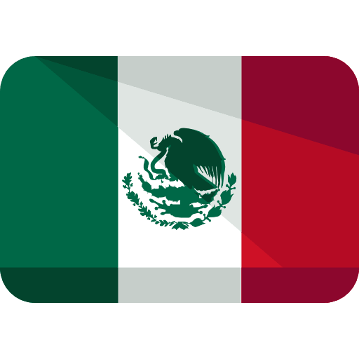

<mat-toolbar color="primary">
    <mat-toolbar-row>
        <button mat-button class="example-icon" [matMenuTriggerFor]="menu" aria-label="Example icon-button with a menu">
            <mat-icon>menu</mat-icon>
        </button>
        <div class="spacer"></div>
        
        <div class="spacer"></div>
        <button mat-button>
            <a href="https://rompopecarmelita.com/" target="_blank">  </a>
        </button>
    </mat-toolbar-row>
</mat-toolbar>
<mat-menu #menu="matMenu">
    <button mat-menu-item [routerLink]="['/']">Home/Our Company/Contact</button>
    <button mat-menu-item [routerLink]="['our-history']">Our History</button>
    <button mat-menu-item [routerLink]="['recipebook-and-artesanal-process']">Recipe Book and Artesanal process</button>
    <button mat-menu-item [routerLink]="['our-catalogue']">Our Catalogue</button>
    <button mat-menu-item [routerLink]="['sellings-points']">Sellings points</button>
    <button mat-menu-item [routerLink]="['our-family']">Our Family</button>
    <button mat-menu-item [routerLink]="['our-certifications']">Our Certifications</button>
</mat-menu>